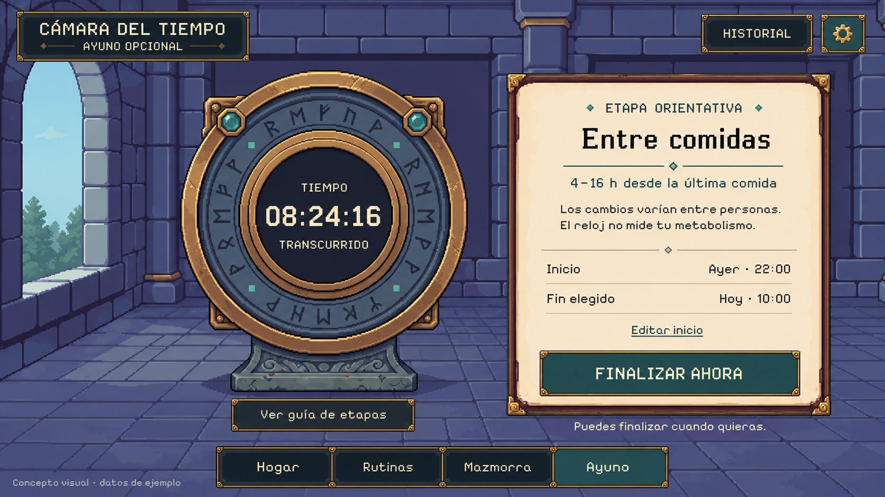
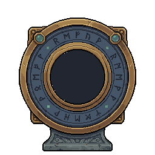
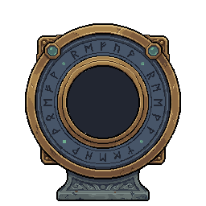

Propuesta de pantalla para aprobar antes de construir la ventana en Unity. El fondo, el reloj y los controles se mantendrán separados.

Runas tenues; carcasa y números estables. Los ejemplos solo cambian la presentación, no registran un ayuno.


Los cambios varían entre personas. El reloj no mide tu metabolismo.
Ejemplo ficticio de 08:24:16. Los intervalos no son metas ni mediciones clínicas.
Respeta la preferencia del sistema de movimiento reducido. El reloj sigue siendo legible sin animación.